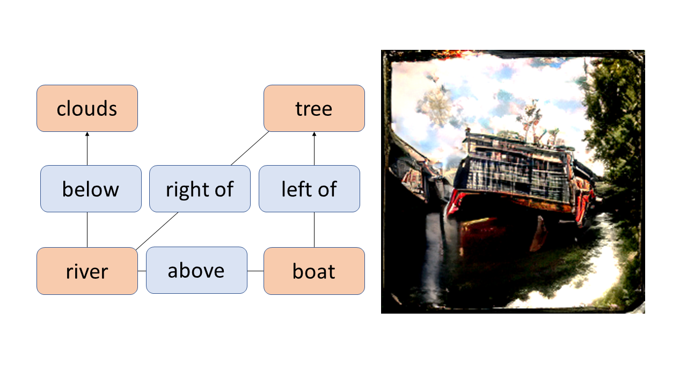

About Me
I graduated with a Ph.D. in Computer Vision at the University of Catania, at the PeRCeiVe Lab, under the supervision of Professor Concetto Spampinato
My research focuses on generative models conditioned on different types of input for image generation, with applications in radio astronomy for data augmentation.
Projects


Selected Publications

Renato Sortino, Simone Palazzo, Concetto Spampinato
Computer Vision and Image Understanding (Elsevier)

Renato Sortino, Thomas Cecconello, Andrea DeMarco, Giuseppe Fiameni et al.
arXiv Preprint

Giuseppe Vecchio, Renato Sortino, Simone Palazzo, Concetto Spampinato
arXiv Preprint
Latest Blog Posts
-
[Oct 7, 2023]
ColorizeNet: Stable Diffusion for Image Colorization -
[Jul 14, 2022]
Distribute your PyTorch model in less than 20 lines of code